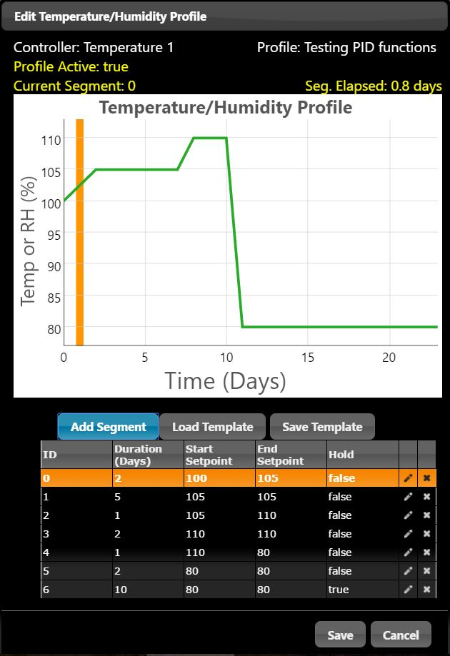
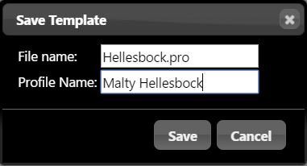

CellarWarden supports the use of controller profiles to control the setpoint of the controller over time. These profiles are accessed in the Controllers configuration dialog. Profiles may be developed "from scratch" using the profile editor or templates may be loaded from within the dialog. Note that loaded profiles obey the Time Increment setting in the Controllers configuration dialog.
Open the Profile Dialog from within the Controllers configuration dialog by clicking on the Edit Profile button...

The Profile BannerThe top of this dialog presents information about the currently loaded profile, including the controller it is associated with (in this case, Temperature 1), the profile name (Testing PID functions), the activity status (Profile Active: True), the current segment in the profile that is active (Current Segment: 0) and the elapsed time in this segment (Seg. Elapsed: 0.8 days). Note that clicking on the Edit Profile button in the Controllers dialog allows for editing or viewing a running profile.
The Profile GraphIn the center of the Profile Dialog, a graph depicting the profile over time is presented. The Y-axis represents either the temperature or humidity setpoint, depending on the mode selected in the Controller Dialog. The X-axis represents time over the course of the profile. Again, recall that time depicted here is set by the Time Increment control in the Controllers Dialog.If a profile is currently running/active, an orange marker will be displayed that indicates the current segment and approximate duration within that segment. This provides a quick method for checking the status of an active profile.
The Profile EditorBelow the graph, the Profile Editor is provided. The profile is split up into different segments, starting from segment 0 to as many segments as are needed. If a profile is running, the currently active segment will be highlighted. To add a new segment to the end of the current profile, click the Add Segment button. To edit a segment, click on the edit control (this looks like a pencil at the right of each segment row). This will open an Edit Segment dialog in which the Duration, Start Setpoint, End Setpoint and Hold parameters may be edited. For ramping, the start and end setpoints can be different and CellarWarden will automatically ramp between these temperatures over the duration of the segment. For a stepped segment, set the Start and End setpoints to the same value. To delete a segment, click on the delete button (this is an X at the right of each segment row). Note that it is not possible to delete segments if the profile is currently running.
To load a pre-existing template, click on the Load Template button...
Use the pulldown menu to select a template to load. After selecting a template, the Profile Name and number of segments will be shown. Click on the Load button to load this into the Profile Editor. Click on the Delete button to delete this template from the server. Press Cancel to return to the Profile Editor dialog. Note that it is not possible to load a template if the profile is active.
Saving Templates
After editing a profile, this may be saved as a template on the server. To do so, click the Save Template button, which will bring up the following dialog:
Provide a Filename with the extension .pro, e.g. Hellesbock.pro. This filename must correspond to Linux filename convensions. Enter a descriptive Profile Name of less than about 20 characters. Note that profile templates are stored in the directory ../CellarW/public/profiles.